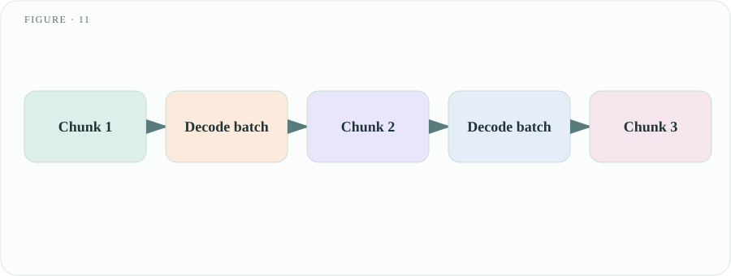

上一章说到长请求会霸占调度器。Chunked Prefill 是 vLLM 解决"长 prompt 阻塞所有请求"的关键机制。它把一个大 prefill 拆成多个小 chunk，穿插在 decode 步骤之间处理。

11.1 一个长 Prompt 引发的血案
假设你有一个 8192 token 的 prompt（比如 RAG 检索回来一堆文档），
在传统模式下：
Step 1: Prefill 处理全部 8192 tokens → 耗时 200ms
在此期间，其他所有请求的 decode 全部暂停！
200ms 对于 decode 来说是很长的延迟——本来每步 decode 只要 10ms。
结果：TTFT（首 token 延迟）直接飙升到 200ms+，所有并发请求都被拖累。11.2 Chunked Prefill 的解法
把 8192 token 拆成 4 个 2048 token 的 chunk，分 4 步处理：
Step 1: Prefill chunk [0:2048] + Decode 其他 9 个请求
Step 2: Prefill chunk [2048:4096] + Decode 其他 9 个请求
Step 3: Prefill chunk [4096:6144] + Decode 其他 9 个请求
Step 4: Prefill chunk [6144:8192] + Decode 其他 9 个请求 → Prefill 完成，进入 Decode
Step 5: Decode（已和其他请求一起正常 Decode）
长 prefill 被拆分后，可以让调度器在多个迭代中安排其他请求的 decode；单个长请求的总 prefill 工作量并不会因此自动减少。
其他请求的 Decode 延迟几乎不受影响核心思想：不减少总时间，但把一个大块的阻塞拆成多个小块，让其他请求能穿插执行。就像高速公路——不放一辆超长卡车堵住所有车道，而是让它分段通过，其他车交替穿插。
11.3 Chunk Size 的权衡
| Chunk Size | 优势 | 劣势 |
|---|---|---|
| 小（256-512 token） | 对其他请求干扰最小 | 总 prefill 时间长（要更多步），每个 chunk 有调度开销 |
| 中（2048 token，vLLM 默认） | 平衡吞吐和延迟 | — |
| 大（4096+ token） | 总 prefill 更快（少步数） | 单步对其他请求干扰大 |
11.4 配置 Chunked Prefill
# V1 在满足条件时会使用 Chunked Prefill；具体是否启用及每轮预算应以当前配置和启动日志为准
vllm serve model
# 控制每 batch 最大 token 数（间接影响 chunk 大小）
vllm serve model --max-num-batched-tokens 4096
# 如果 max-num-batched-tokens=4096，一个 8192 token 的 prompt
# 至少被拆成 2 个 chunk（每个最多 4096 token）
# 如果想禁用 Chunked Prefill（不推荐）：
# V1 目前无法完全禁用，但可以设置非常大的 max-num-batched-tokens 来模拟11.5 Chunked Prefill 与 Prefix Caching 的配合
两个特性搭配使用时有个微妙之处：
请求 A: [Shared Prefix 1000 tokens] + [Unique Suffix 100 tokens]
请求 B: [Shared Prefix 1000 tokens] + [Unique Suffix 7000 tokens]
Step 1: A 的 Prefix 被计算并缓存
Step 2: B 的 Prefix 命中缓存（零计算！）
Step 3: B 的 Unique Suffix 被 Chunked Prefill 拆成多个 chunk
两个特性叠加：
- Prefix Caching 省了 1000 token 的重复计算
- Chunked Prefill 确保 B 的长 suffix 不阻塞 A 的 decode最佳实践：如果大部分请求有长 shared prefix（如 RAG 场景），同时启用 Prefix Caching 和 Chunked Prefill。前缀命中后，prefill 只处理 unique 部分，即使 unique 部分很长也不会阻塞其他请求。
11.6 什么时候 Chunked Prefill 效果不明显
- 所有请求的 prompt 都很短（<512 token）：分了 chunk 也没什么区别
- 并发数很低（<5）：没有"其他请求"需要照顾
- 极致追求 TTFT：如果你对首 token 延迟极度敏感（如实时语音），chunk 机制会让首 token 晚出现（因为 prompt 被拆开了）。可以考虑提高 chunk size 或用 speculative decoding 补偿
Chunked Prefill 在 V1 中默认开启且做得很好——大多数用户不需要操心。下一章咱们看 V1 的整体架构设计，理解为什么 vLLM 要从 V0 重写。
参考资料与证据
- vLLM V1 指南Chunked Prefill
- Scheduler 配置max_num_batched_tokens